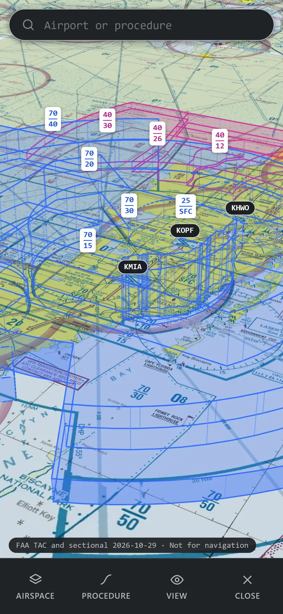
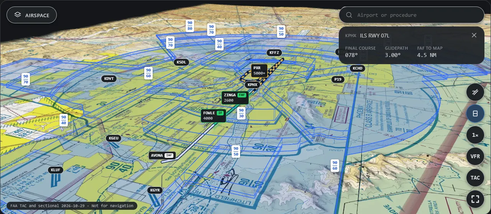

Real FAA airspace in 3D, on the real chart.
Raise the Class B over the sectional and fly the approaches inside it. Phoenix and Miami, free in your browser, and offline once saved.
Open the viewer Not for navigationThe upside-down wedding cake, for real
Every shelf of the Phoenix Class B at its charted floor and ceiling, over the FAA sectional and real terrain. Open Phoenix

Miami too
Class B, C and D stacked up around Miami, Fort Lauderdale and the Keys. Same on a phone. Open Miami


Free roam
Search any airport or procedure. Approaches draw in 3D with their fixes and altitudes, inside the airspace they fly through. Open the ILS 07L

Guided walkthroughs
Lessons that move the camera for you, draw a procedure leg by leg and fly an airplane down it. Part of the skycake engine that teaching sites embed.

Generated quizzes
Questions built from the chart data itself, like find the fix or read the floor, so there is always a fresh one. Part of the engine too.

Accessibility mode
Higher contrast, 44 px targets, no motion, full keyboard control, an on-screen camera pad, and a list of everything in view. It targets WCAG 2.2 AA.